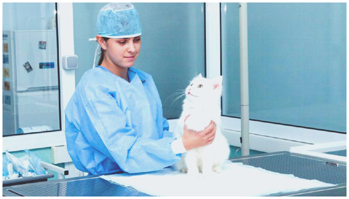

Услуги
Приводя своего любимого питомца в нашу клинику, вы можете быть уверены в том, что он получит полный комплекс услуг – от развернутой диагностики на самом современном и точном оборудовании до оказания первой неотложной помощи, которые будут проведены квалифицированным и хорошо подготовленным персоналом.
На что вы можете рассчитывать в ветклинике "Baskerville":
- Рентгенологические исследования. Этот метод диагностики один из самых важных. Он незаменим и используется для выявления патологии опорно-двигательного аппарата, травм, обнаружения инородных предметов в кишечнике и желудке, а также незаменим в кардиологическом обследовании.
- УЗИ. Один из самых информативных методов диагностики, который позволяет подтвердить или опровергнуть, выставленный ранее диагноз и исключить ошибки в назначенном лечении.
- ЭКГ. Хотя животные и не страдают целым рядом «человеческих сердечных болезней», сердечко у них частенько пошаливает, особенно у пожилых наших любимцев, а ЭКГ – это первый шаг в первичном кардиологическом обследовании, благодаря которому можно узнать причину проблемы и облегчить страдания вашего питомца.
- Эхокардиография (УЗИ сердца) – дает возможность осуществить точную диагностику нарушений в работе сердца.
- Гистероскопия. Эндоскопический метод обследования влагалища, шейки и полости матки животного. Является наиболее достоверным методом диагностики состояния эндометрия и позволяет быстро скорригировать тактику ведения и выбрать между хирургическим или терапевтическим лечением.
- Реанимация. Наша клиника оборудована всей необходимой аппаратурой жизнеобеспечения и препаратами для оказания помощи животным даже в крайне тяжелом состоянии. Реанимация быстрая и на высоком уровне.
- Удаление инородных тел из пищевода и желудка безоперационным путем. Удаление инородных тел из пищевода и желудка безоперационным путем осуществляется благодаря эндоскопу. И для этого вам нет необходимости предварительно записываться на прием или выстаивать очереди. Процедура проводится экстренно в любое время суток.
- Травматологические операции. Почти половина всех пациентов ветеринарных клиник обращаются за помощью к ветеринарному врачу именно из-за травм и переломов. Мы лечим любые переломы, применяя современный и безопасный остеосинтез.
- Диспансеризация. Для того, чтобы не упустить момент начала какого-либо заболевания, мы советуем периодически полностью обследовать вашего питомца.
- Ультрафиолетовое облучение крови (УФО). УФО крови значительно повышает иммунитет, выводит токсины, снимает аллергизацию организма, нормализует обмен веществ и обладает губительным действием на вирусы и бактерии.
- Кислородотерапия. Наша клиника оснащена всей необходимой аппаратурой для подачи кислорода животным любой весовой категории. Кислородотерапия необходима при тяжелых приступах астмы, заболеваниях сердца, пневмонии и других заболеваниях, приводящих к затруднению дыхания. Также эта процедура облегчает состояние после наркоза.
- Стационар для животных. В нашей клинике вы найдете удобные палаты для своих любимцев и отделение, оснащенное необходимым оборудованием для оказания экстренной помощи и постоянного мониторинга.
- Гостиница для животных. Отправляясь в длительную поездку, переживаете за свое животное и не знаете, кому его доверить? Мы обеспечим ему абсолютный комфорт и профессиональный уход на время вашего отсутствия. У нас ваш питомец будет чувствовать себя, как дома.
- Стерилизация кошек. Часто необходимая и вынужденная мера, которую наши специалисты проведут быстро и безболезненно.
- Вакцинация кошек и собак. Необходимая мера для предотвращения заболевания не только животного, но и членов семьи, общими для людей и животных заболеваниями. ВетаптекаПри нашей клинике работает ветаптека, в которой можно приобрести любой ветеринарный медикамент, начиная с вакцин и заканчивая противоопухолевыми препаратами.
Ветеринарная клиника "Baskerville" — это широчайший перечень услуг, который сделает вашего питомца здоровее и счастливее.
